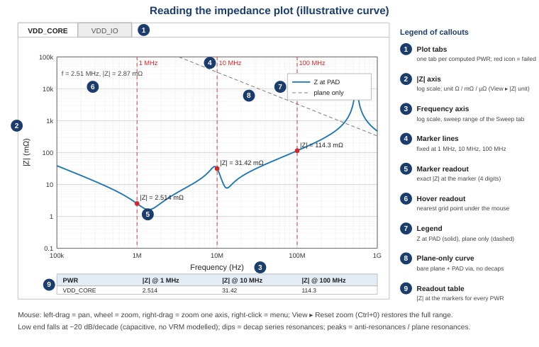

After Compute ▸ Run (F5) the right side of the window shows one plot tab per computed PWR net and a readout table. This page explains how to read and use them, how to set the sweep and how to export.

Figure 1 – Parts of the result view (illustrative curve).
| # | Element | Description |
|---|---|---|
| 1 | Plot tabs | One tab per computed PWR, named after the net. A red icon marks a PWR that failed; its messages are in the Messages dock. |
| 2 | |Z| axis | Logarithmic impedance magnitude at the PAD, in the unit chosen under View ▸ |Z| unit. |
| 3 | Frequency axis | Logarithmic frequency with labels 100k, 1M, 10M, 100M, 1G (Hz). |
| 4 | Marker lines | Red dashed vertical lines at 1 MHz, 10 MHz and 100 MHz. Markers outside the sweep range are not drawn (readout "n/a"). |
| 5 | Marker readout | Dot and label with |Z| at the marker frequency, computed exactly at that frequency (4 significant digits). |
| 6 | Hover readout | Frequency and |Z| of the curve point nearest to the mouse, in the top-left corner. |
| 7 | Legend | "Z at PAD" (solid blue) and, if enabled, "plane only" (dashed grey). The legend inside the plot is off by default – switch it on with View ▸ Show Plot Legend; exported images always contain it. |
| 8 | Plane-only curve | Impedance of the bare synthetic plane plus PAD vias, without any decap (see below). |
| 9 | Readout table | Rows = the PWR nets whose curve is shown (see Curve list), columns = |Z| at 1, 10, 100 MHz in the current unit. |
The All PWRs tab draws one curve per computed net and lists them in a panel to the right of the plot, in the order of the PWR Nets table. Every row has a check box, a colour swatch matching the curve and the net name (long names are shortened – the tool tip shows the full name). Unticking a row hides its curve (and its plane-only curve and markers) immediately and removes the net from the readout table; ticking it brings it back. Drag the splitter handle between plot and list to make the list wider, narrower or to hide it completely; its width is remembered, as is which curves you hid.
| Control | What it does |
|---|---|
| Filter box | Type a part of a net name (upper/lower case does not matter) to list only the matching rows – handy with dozens of nets. Filtering only lists rows; it never ticks or unticks anything, so curves hidden by a filter stay in the plot. |
| Selecting rows | Click a row to select it, Ctrl+click to add one, Shift+click for a range. Press Space to tick or untick every selected row together (they all follow the row you last clicked). |
| All / None | Show or hide every curve. |
| Invert | Show what was hidden and hide what was shown. |
| Only selected | Show the selected rows and hide all others. |
| Right-click | The same four commands as a context menu on the list. |
Because the list already names every curve with its colour, the legend inside the plot is switched off by default (View ▸ Show Plot Legend brings it back; with many nets it would cover the curves). Exported images always contain the legend.
The per-PWR tabs always show their own curve; the curve list belongs to the All PWRs tab only. Hidden curves
are also left out of the exported All_PWRs image (All Plots…), so you can export exactly the
comparison you see.
| Action | Mouse / key |
|---|---|
| Pan | Left-drag inside the plot |
| Zoom both axes | Mouse wheel |
| Zoom one axis | Right-drag (horizontal = frequency, vertical = |Z|), or wheel over an axis |
| More options | Right-click for the context menu (Reset view, View All, axis ranges, export) |
| Reset view | ⟲ Reset view button above the plot tabs, View ▸ Reset View, Ctrl+D (also Ctrl+0), or right-click ▸ Reset view |
Reset view restores the default view that a fresh computation shows: both axes logarithmic, the frequency axis over the whole sweep, the |Z| axis over the minimum and maximum of the visible curves only (plus the plane-only curves when these are shown) with the standard small margin, and the markers shown or hidden as set under View ▸ Show Markers. Hidden curves never widen the range, so after hiding all but one net the reset zooms in on that net; if you hide every curve, the range falls back to all of them. The context-menu entry View All does the same.
As long as you have not panned or zoomed, the plot keeps fitting itself: hiding or showing a curve in the All PWRs tab or switching the |Z| unit re-fits it at once. The first pan or zoom freezes the view – from then on, hiding curves leaves it exactly where you put it (a unit switch only rescales the vertical range) until the next Reset view.
The zoom state of each plot is remembered by the auto-save and restored with the next start.
| Shortcut change. Ctrl+D now resets the plot view everywhere in the application; Edit ▸ Duplicate Row moved to Ctrl+Shift+D. |
View ▸ |Z| unit selects Ω, mΩ (default) or µΩ. The axis label, marker labels, hover readout and readout table change together, and the current zoom is kept (the vertical range is rescaled). The unit is saved with the project. Exported files always contain values in Ω.
Tick View ▸ Show plane-only curve (or the check box in the Sweep tab) and compute again. The dashed curve shows the plane pair alone as seen through the PAD vias. It helps to see where the plane capacitance takes over from the decaps and where plane resonances appear. Because the plane is synthetic (W × 1.4·D_ref), treat its exact level and resonance frequencies as indicative.
More background: What shapes the curve.
| Target impedance. The tool does not draw a target line. A common first estimate is Z_target = (supply voltage × allowed ripple) / transient current, e.g. 1.0 V × 3 % / 5 A = 6 mΩ. Compare it with the marker readouts and the curve between the lowest and highest frequency of interest. |
| Field | Default | Rules |
|---|---|---|
| f start | 100k | ≥ 1 kHz and below f stop. |
| f stop | 1G | ≤ 20 GHz; above 3 GHz you get W_SWEEP_HIGH (model accuracy). |
| Points | 400 | 10 … 5000, logarithmically spaced. More points only make the curve smoother; marker values are always exact. |
| Show plane-only curve | off | Also compute the plane-only curve. |
Frequency fields accept engineering notation: 100k or 100K = 1e5, 2.5M,
2.5meg, 2.5MEG or 2.5MHz = 2.5e6, 1G or 1GHz = 1e9, plain numbers
such as 1e8. A lower-case m is rejected on purpose, to avoid confusing milli and mega.
Invalid ranges give E_SWEEP_RANGE.
All issues of the last validation or computation are listed with severity icon, code, message, source (file or
PWR:name) and location (sheet cell, file line or table row). Double-click a message to jump to the tab
and row concerned. Hide or show the dock with View ▸ Show Messages dock. See
Troubleshooting for every code.
All exports are in File ▸ Export and in the ↧ Export button above the plot tabs. Every successful
export adds an Info line I_EXPORT with the written path(s) to the Messages dock; a failure
(for example a read-only folder) adds an Error line E_EXPORT instead.
| Menu | Output |
|---|---|
| Results CSV… | A dialog chooses the layout. One file (default): column Frequency (Hz), then for each PWR <PWR> |Z| (Ohm),
<PWR> Re Z (Ohm), <PWR> Im Z (Ohm) and, if computed,
<PWR> |Z| plane only (Ohm). All PWRs of one computation share the frequency grid.One file per PWR: <project>_<PWR>.csv in the chosen folder with columns
Frequency (Hz), Re Z (Ohm), Im Z (Ohm), |Z| (Ohm) and, if enabled,
|Z| plane only (Ohm). A header block of # lines lists the marker readouts. |
| Results XLSX… | One workbook with a Summary sheet (inputs and marker readouts) and one sheet per PWR with
the same columns (sheet names are shortened to 31 characters; characters []:*?/\ are replaced by _). |
| Touchstone… | Touchstone v1 file(s), see below: one 1-port .s1p per PWR
(<project>_<PWR>.s1p in a folder), or one N-port file .sNp with N = number of PWRs. |
| Plot PNG… | Image of the visible plot (1600 px wide) with the current zoom, unit and markers. |
| All Plots… | Choose a folder, format (PNG or SVG), width and height in pixels. Writes All_PWRs.png (or
.svg) plus one image per PWR tab, named after the PWR with characters that are not allowed in file names
replaced by _ (for example VDD/IO → VDD_IO.png). The images use the current |Z| unit,
marker and plane-only settings and the default view, unless Keep current zoom is ticked. Tabs you never
opened are rendered completely as well; the on-screen plots are not changed. |
Numbers are written in Ω with full precision (CSV: 10 significant digits, Touchstone: 17), so exported data can be post-processed or overlaid with measurements in other tools. Complex values allow you to recombine results (e.g. add a VRM model externally).
| Option | Meaning |
|---|---|
| Parameter | S (default): S11 = (Z − R) / (Z + R). Z: impedance, written normalised to R (Touchstone v1 rule; with R = 1 Ω the numbers are the impedance in Ω). |
| Data format | RI (default): real and imaginary part. MA: magnitude and angle in degrees. |
| Frequency unit | Always Hz. |
| Reference R | Default 1 Ω, the usual PDN convention: with mΩ impedances S11 stays close to −1 but is still resolved well, whereas with 50 Ω it would differ from −1 only in the fifth digit. Editable. |
The option line is, for example, # Hz S RI R 1. Comment lines (!) at the top give the tool name
and version, project, export date (UTC), the PWR name of each port and a geometry summary (PWR/GND layers, width,
decaps, vias). Data follow the Touchstone 1.1 layout: 1- and 2-port data on one line per frequency (2-port order
N11 N21 N12 N22); for 3 ports and more each matrix row starts on a new line with at most four value pairs per line.
Files open in circuit simulators and in most S-parameter viewers.
| Uncoupled ports. In the N-port file every PWR net is one port and all off-diagonal parameters are exactly 0. Each net was computed on its own synthetic plane, so no coupling between nets is modelled – do not use the file to study noise transfer between rails. |
| Code | Meaning | What to do |
|---|---|---|
E_SWEEP_RANGE | f start below 1 kHz, f start ≥ f stop, f stop above 20 GHz, or points outside 10 … 5000. | Correct the Sweep tab. |
W_SWEEP_HIGH | f stop above 3 GHz. | Results above a few GHz are only indicative. |
W_MODES_CAPPED | The number of cavity modes hit the limit; spreading inductance may be slightly under-resolved. | Happens for very large planes with very small drills; results remain usable. |
I_EXPORT | An export finished; the message lists the written file(s). | – |
E_EXPORT | An export failed (folder not writable, file in use, PWRs with different frequency grids for a one-file export …). | Read the message, choose another folder or close the file in the other program, and export again. |
W_EXPORT_SKIPPED | A PWR whose computation failed has no results and was left out of the export. | Fix the error of that PWR (see E_PWR_FAILED and the messages above it), run again and export again. |
E_PWR_FAILED | The PWR was not computed because of an error in one of its files (for example a decap model that cannot be parsed); the Location column names the file. | Correct the file named in the message; the other PWRs are not affected. |
E_SINGULAR | The port reduction could not be solved at some frequency. | Look for W_PORT_OVERLAP or zero-length vias with ideal shorts in models. |